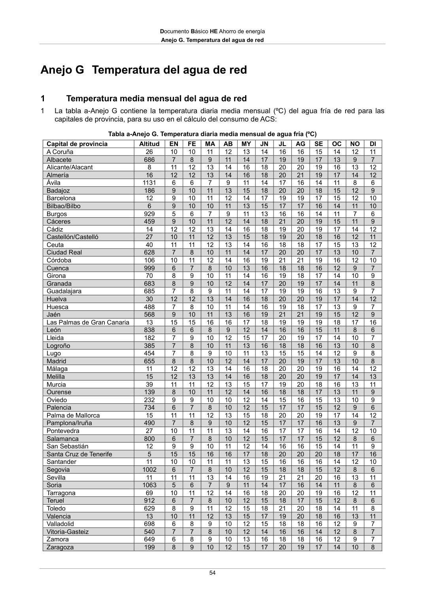

DB-HE · Anejo G. Temperatura del agua de red · 1 Temperatura media mensual del agua de red · versión 2022-06-14
SHA256: 7f890bd495552e979f83f72c5f5c7b642e745911a8e343a7b5b73023ce0e1f05 · página física 54 de 56 · métodos de encabezado
solo si están cotejados.
Formatos: Markdown · JSON de bloques · PDF p. 54 · imagen PNG
Documento Básico HE Ahorro de energía Anejo G. Temperatura del agua de red 54 Anejo G Temperatura del agua de red 1 Temperatura media mensual del agua de red 1 La tabla a-Anejo G contiene la temperatura diaria media mensual (ºC) del agua fría de red para las capitales de provincia, para su uso en el cálculo del consumo de ACS: Tabla a-Anejo G. Temperatura diaria media mensual de agua fría (ºC) Capital de provincia Altitud EN FE MA AB MY JN JL AG SE OC NO DI A Coruña 26 10 10 11 12 13 14 16 16 15 14 12 11 Albacete 686 7 8 9 11 14 17 19 19 17 13 9 7 Alicante/Alacant 8 11 12 13 14 16 18 20 20 19 16 13 12 Almería 16 12 12 13 14 16 18 20 21 19 17 14 12 Ávila 1131 6 6 7 9 11 14 17 16 14 11 8 6 Badajoz 186 9 10 11 13 15 18 20 20 18 15 12 9 Barcelona 12 9 10 11 12 14 17 19 19 17 15 12 10 Bilbao/Bilbo 6 9 10 10 11 13 15 17 17 16 14 11 10 Burgos 929 5 6 7 9 11 13 16 16 14 11 7 6 Cáceres 459 9 10 11 12 14 18 21 20 19 15 11 9 Cádiz 14 12 12 13 14 16 18 19 20 19 17 14 12 Castellón/Castelló 27 10 11 12 13 15 18 19 20 18 16 12 11 Ceuta 40 11 11 12 13 14 16 18 18 17 15 13 12 Ciudad Real 628 7 8 10 11 14 17 20 20 17 13 10 7 Córdoba 106 10 11 12 14 16 19 21 21 19 16 12 10 Cuenca 999 6 7 8 10 13 16 18 18 16 12 9 7 Girona 70 8 9 10 11 14 16 19 18 17 14 10 9 Granada 683 8 9 10 12 14 17 20 19 17 14 11 8 Guadalajara 685 7 8 9 11 14 17 19 19 16 13 9 7 Huelva 30 12 12 13 14 16 18 20 20 19 17 14 12 Huesca 488 7 8 10 11 14 16 19 18 17 13 9 7 Jaén 568 9 10 11 13 16 19 21 21 19 15 12 9 Las Palmas de Gran Canaria 13 15 15 16 16 17 18 19 19 19 18 17 16 León 838 6 6 8 9 12 14 16 16 15 11 8 6 Lleida 182 7 9 10 12 15 17 20 19 17 14 10 7 Logroño 385 7 8 10 11 13 16 18 18 16 13 10 8 Lugo 454 7 8 9 10 11 13 15 15 14 12 9 8 Madrid 655 8 8 10 12 14 17 20 19 17 13 10 8 Málaga 11 12 12 13 14 16 18 20 20 19 16 14 12 Melilla 15 12 13 13 14 16 18 20 20 19 17 14 13 Murcia 39 11 11 12 13 15 17 19 20 18 16 13 11 Ourense 139 8 10 11 12 14 16 18 18 17 13 11 9 Oviedo 232 9 9 10 10 12 14 15 16 15 13 10 9 Palencia 734 6 7 8 10 12 15 17 17 15 12 9 6 Palma de Mallorca 15 11 11 12 13 15 18 20 20 19 17 14 12 Pamplona/Iruña 490 7 8 9 10 12 15 17 17 16 13 9 7 Pontevedra 27 10 11 11 13 14 16 17 17 16 14 12 10 Salamanca 800 6 7 8 10 12 15 17 17 15 12 8 6 San Sebastián 12 9 9 10 11 12 14 16 16 15 14 11 9 Santa Cruz de Tenerife 5 15 15 16 16 17 18 20 20 20 18 17 16 Santander 11 10 10 11 11 13 15 16 16 16 14 12 10 Segovia 1002 6 7 8 10 12 15 18 18 15 12 8 6 Sevilla 11 11 11 13 14 16 19 21 21 20 16 13 11 Soria 1063 5 6 7 9 11 14 17 16 14 11 8 6 Tarragona 69 10 11 12 14 16 18 20 20 19 16 12 11 Teruel 912 6 7 8 10 12 15 18 17 15 12 8 6 Toledo 629 8 9 11 12 15 18 21 20 18 14 11 8 Valencia 13 10 11 12 13 15 17 19 20 18 16 13 11 Valladolid 698 6 8 9 10 12 15 18 18 16 12 9 7 Vitoria-Gasteiz 540 7 7 8 10 12 14 16 16 14 12 8 7 Zamora 649 6 8 9 10 13 16 18 18 16 12 9 7 Zaragoza 199 8 9 10 12 15 17 20 19 17 14 10 8
